Table of Contents
Capítulo 3: Vista XML (clásico)
OpenXava genera a partir del modelo una interfaz gráfica de usuario por defecto. Para muchos casos sencillos esto es suficiente, pero muchas veces es necesario modelar con más precisión la forma de la interfaz de usuario o vista. En este capítulo vamos a ver cómo.La sintaxis para definir una vista es:
<vista nombre="nombre" <!-- 1 --> etiqueta="etiqueta" <!-- 2 --> modelo="modelo" <!-- 3 --> miembros="miembros" <!-- 4 --> hereda-de="vista" <!-- 5 Nuevo en v3.1.2 --> > <propiedad ... /> ... <!-- 6 --> <vista-propiedad ... /> ... <!-- 7 --> <vista-referencia ... /> ... <!-- 8 --> <vista-coleccion ... /> ... <!-- 9 --> <miembros ... /> ... <!-- 10 --> </vista>
- nombre (opcional): El nombre identifica a la vista, y puede ser usado desde otro lugares de OpenXava (por ejemplo desde aplicacion.xml) o desde otro componente. Si no se pone nombre se asume que es la vista por defecto, es decir la forma normal de visualizar el objeto. Si el nombre es Simple o Search esta vista se usará por defecto para crear el diálogo de búsqueda (desde v4m4).
- etiqueta (opcional): Etiqueta que se muestra al usuario si es necesario, cuando se visualiza la vista. Es mucho mejor usar los archivos i18n.
- modelo (opcional): Si es una vista de un agregado de este componente se pone aquí el nombre del agregado. Si no se pone nada se supone que es una vista de la entidad.
- miembros (opcional): Lista de miembros a visualizar. Por defecto visualiza todos los miembros no ocultos en el orden en que están declarados en el modelo. Este atributo es excluyente con el elemento miembros visto más adelante.
- hereda-de (opcional): (Nuevo en v3.1.2) Todos los miembros en la vista hereda-de se incluyen automáticamente en la actual. Véase herencia de vistas.
- propiedad (varios, opcional): Permite definir propiedades de la vista, es decir, información que se puede visualizar de cara al usuario y tratar programáticamente, pero no forma parte del modelo.
- vista-propiedad (varias, opcional): Para definir la forma en que queremos que se visualice cierta propiedad.
- vista-referencia (varias, opcional): Para definir la forma en que queremos que se visualice cierta referencia.
- vista-coleccion (varias, opcional): Para definir la forma en que queremos que se visualice cierta colección.
- miembros (uno, opcional): Indica los miembros que tienen que salir y como tienen que estar dispuestos en la interfaz gráfica. Es excluyente con el atributo miembros. Dentro de miembros podemos usar los elementos seccion y grupo para indicar la disposición; o el elemento accion (desde v2.0.3) para mostrar un vínculo asociado a una acción propia dentro de la vista (ver abajo).
Disposición
Por defecto (es decir si no definimos ni siquiera el elemento <view/> en nuestro componente) se visualizan todos los miembros del objeto en el orden en que están en el modelo, y se disponen uno debajo del otro.Por ejemplo, un modelo así:
<entidad> <propiedad nombre="codigoZona" clave="true" longitud="3" requerido="true" tipo="int"/> <propiedad nombre="codigoOficina" clave="true" longitud="3" requerido="true" tipo="int"/> <propiedad nombre="codigo" clave="true" longitud="3" requerido="true" tipo="int"/> <propiedad nombre="nombre" tipo="String" longitud="40" requerido="true"/> </entidad>Generaría una vista con este aspecto:
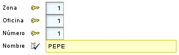
Podemos escoger que miembros queremos que aparezcan y en que orden, con el atributo miembros:
<vista miembros="codigoZona; codigoOficina; codigo"/>
En este caso ya no aparece el nombre en la vista.Los miembros también se pueden especificar mediante el elemento miembros que es excluyente con el atributo miembros, así:
<vista> <miembros> codigoZona, codigoOficina, codigo; nombre </miembros> </vista>Podemos observar como separamos los nombres de miembros con comas y punto y comas, esto nos sirve para indicar la disposición, con la coma el miembro se pone a continuación, y con punto y coma en la línea siguiente, esto es la vista anterior quedaría así:
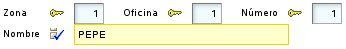
Grupos
Con los grupos podemos agrupar un conjunto de propiedades relacionadas, y esto tiene un efecto visual:<vista> <miembros> <grupo nombre="id"> codigoZona, codigoOficina, codigo </grupo> ; nombre </miembros> </vista>En este caso el resultado sería:
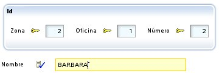
Se puede observar como las tres propiedades puestas en el grupo aparecen dentro de un marquito, y como nombre aparece fuera. El punto y coma antes de nombre es para que aparezca abajo, si no aparecería a continuación.
Podemos poner varios grupos en una vista:
<grupo nombre="cliente"> tipo; nombre; </grupo> <grupo nombre="comercial"> comercial; relacionConComercial; </grupo>En este caso se visualizan uno al lado del otro:
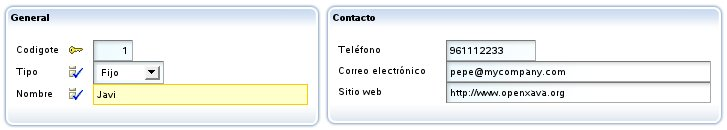
Si queremos que aparezca uno debajo del otro debemos poner un punto y coma después del grupo, como sigue:
<grupo nombre="cliente"> tipo; nombre; </grupo>; <grupo nombre="comercial"> comercial; relacionConComercial; </grupo>En este caso se visualizaría así:
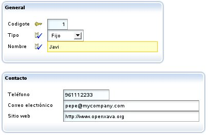
Anidar grupos está soportado. Esta interesante característica permite disponer los elementos de la interfaz gráfica de una forma simple y flexible. Por ejemplo, si definimos una vista como ésta:
<miembros> factura; <grupo nombre="datosAlbaran"> tipo, codigo; fecha; descripcion; envio; <grupo nombre="datosTransporte"> distancia; vehiculo; modoTransporte; tipoConductor; </grupo> <grupo nombre="datosEntregadoPor"> entregadoPor; transportista; empleado; </grupo> </grupo> </miembros>Obtendremos lo siguiente:

Nuevo en v2.0.4: A veces es útil distribuir los miembros alineándolos por columnas, como en una tabla. Por ejemplo, la siguiente vista:
<vista nombre="Importes"> <miembros> año, numero; <grupo nombre="importes"> descuentoCliente, descuentoTipoCliente, descuentoAño; sumaImportes, porcentajeIVA, iva; </grupo> </miembros> </vista>...será visualizada como sigue:

Esto es feo. Sería mejor tener la información alineada por columnas. Podemos definir el grupo de esta forma:
<vista nombre="Importes"> <miembros> año, numero; <grupo nombre="importes" alineado-por-columnas="true"> <!-- 1 --> descuentoCliente, descuentoTipoCliente, descuentoAño; sumaImportes, porcentajeIVA, iva; </grupo> </miembros> </vista>Y así obtendríamos el siguiente resultado:

Ahora, gracias al atributo alineado-por-columnas (1), los miembros están alineado por columnas.
El atributo alineado-por-columnas está disponible también para las secciones (ver abajo) y para miembros, es decir para la vista raíz (nuevo en v4.7.1). Además, si ponemos alignedByColumns=true (nuevo en v4.7.1) en xava.properties todos los elementos se alinean por columna incluso si no especificamos alineado-por-columnas en la vista.
Secciones
Además de en grupo los miembros se pueden organizar en secciones, veamos un ejemplo en el componente Factura:<vista> <miembros> año, numero, fecha, pagada; descuentoCliente, descuentoTipoCliente, descuentoAño; comentario; <seccion nombre="cliente">cliente</seccion> <seccion nombre="lineas">lineas</seccion> <seccion nombre="importes">sumaImportes; porcentajeIVA; iva</seccion> <seccion nombre="albaranes">albaranes</seccion> </miembros> </vista>El resultado visual sería:

Las secciones se convierten en pestañitas que el usuario puede pulsar para ver la información contenida en esa sección. Podemos observar también como en la vista indicamos todo tipo de miembros (y no solo propiedades), así cliente es una referencia, lineas una colección de agregados y albaranes una colección de referencias a entidad.
Se permiten secciones anidadas (nuevo en v2.0). Por ejemplo, podemos definir una vista como ésta:
<vista nombre="SeccionesAnidadas"> <miembros> año, numero <seccion nombre="cliente">cliente</seccion> <seccion nombre="datos"> <seccion nombre="lineas">lineas</seccion> <seccion nombre"cantidades"> <seccion nombre="iva">porcentajeIVA; iva</seccion> <seccion nombre="sumaImportes">sumaImportesm</seccion> </seccion> </seccion> <seccion nombre="albaranes">albaranes</seccion> </miembros> </vista>En este caso podemos obtener una interfaz gráfica como esta:

Nuevo en v2.0.4: Al igual que en los grupos, las secciones permiten usar el atributo alineado-por-columna, así:
<seccion nombre="importes" alineado-por-columnas="true"> ... </seccion>Con el mismo efecto que en el caso de los grupos.
Herencia de vistas (nuevo en v3.1.2)
Al definir una nueva vista podemos heredar los miembros y disposición de una vista ya existente. De esta manera, evitamos copiar y pegar, y al mismo tiempo mantenemos nuestro código breve y fácil de cambiar.Esto se hace mediante hereda-de. Por ejemplo, si tenemos una vista como la siguiente:
<vista nombre="MuySimple"> <miembros>nombre, sexo</miembros> </vista>Esto produce la siguiente interfaz de usuario:
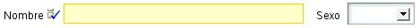
Si ahora queremos crear una nueva vista que extienda de esta simplemente hemos de escribir:
<vista nombre="Simple" hereda-de="MuySimple"> <miembros>lenguajePrincipal</miembros> </vista>y obtendremos lo siguiente:

Como vemos los miembros de la vista MuySimple se incluyen automáticamente en la vista Simple, y los miembros propios de la vista se añaden al final.
Si queremos extender la vista por defecto (la vista por defecto es la vista sin nombre) hemos de usar la palabra DEFAULT como nombre en hereda-de. Como en este ejemplo:
<vista> <miembros> nombre, sexo; lenguajePrincipal, marcoTrabajoFavorito; experiencias </miembros> </vista> <vista nombre="Completa" hereda-de="DEFAULT"> <miembros>marcosTrabajo</miembros> </vista>La vista Completa tendrá todos los miembros de la vista por defecto (nombre, sexo, lenguajePrincipal, marcoTrabajoFavorito, experiencias) más marcosTrabajo.
La herencia de vistas solo aplica a los miembros y su distribución. Las acciones, eventos y otros refinamiento a nivel de miembro no se heredan.
Filosofía para la disposición
Es de notar tenemos grupos y no marcos y secciones y no pestañas. Porque en las vista de OpenXava intentamos mantener un nivel de abstracción alto, es decir, un grupo es un conjunto de propiedades relacionadas semánticamente, y las secciones nos permite dividir la información en partes cuando tenemos mucha y posiblemente no se pueda visualizar toda a la vez, el que los grupos se representen con marquitos y las secciones con pestañas es una cuestión de implementación, pero el generador del interfaz gráfico podría escoger usar un árbol u otro control gráfico para representar las secciones, por ejemplo.Vista propiedad
Con <vista-propiedad/> podemos refinar la forma de visualización y comportamiento de una propiedad en la vista:Tiene esta sintaxis:
<vista-propiedad propiedad="nombrePropiedad" <!-- 1 --> etiqueta="etiqueta" <!-- 2 --> solo-lectura="true|false" <!-- 3 --> formato-etiqueta="NORMAL|PEQUENA|SIN_ETIQUETA" <!-- 4 --> editor="nombreEditor" <!-- 5 nuevo en v2.1.3 --> longitud-visual="longitud" <!-- 6 nuevo en v2.2.1 --> estilo-etiqueta="estilo" <!-- 7 nuevo en v5.8 --> > <al-cambiar ... /> <!-- 8 --> <accion ... /> ... <!-- 9 --> </vista-propiedad>
- propiedad (obligado): Normalmente el nombre de una propiedad del modelo, aunque también puede ser el nombre de una propiedad propia de la vista.
- etiqueta (opcional): Para modificar la etiqueta que se sacará en esta vista para esta propiedad. Para esto es mucho mejor usar los archivos i18n.
- solo-lectura (opcional): Si la ponemos a true esta propiedad no será nunca editable por el usuario en esta vista. Una alternativa a esto es hacer la propiedad editable/no editable programáticamente usando org.openxava.view.View.
- formato-etiqueta (opcional): Forma en que se visualiza la etiqueta para esta propiedad.
- editor (opcional): (Nuevo en v2.1.3) Nombre del editor a usar para visualizar la propiedad en esta vista. El editor tiene que estar declarado en OpenXava/xava/default-editors.xml o xava/editores.xml de nuestro proyecto.
- longitud-visual (opcional): (Nuevo en v2.2.1) La longitud en caracteres del editor en la interfaz de usuario usado para visualizar esta propiedad. El editor mostrará solo los caracteres indicados con longitud-visual pero permite que el usuario introduzca hasta el total de la longitud de la propiedad. Si longitud-visual no se especifica se asume el valor de la longitud de la propiedad.
- estilo-etiqueta (opcional): (Nuevo en v5.8) Estilo con el que se visualiza la etiqueta para esta propiedad. Por defecto están definidos los estilos 'bold-label', 'italic-label' y 'reverse-label'; cualquier otro estilo puede ser definido por el propio usuario (basta con incluirlo en custom.css).
- al-cambiar (uno, opcional): Acción a realizar cuando cambia el valor de esta propiedad.
- accion (varias, opcional): Acciones (mostradas como vínculos, botones o imágenes al usuario) asociadas (visualmente) a esta propiedad y que el usuario final puede ejecutar.
Formato de etiqueta
Un ejemplo sencillo para cambiar el formato de la etiqueta:<vista modelo="Direccion"> <vista-propiedad propiedad="codigoPostal" formato-etiqueta="PEQUENA"/> </vista>En este caso el código postal lo visualiza así:

El formato NORMAL es el que hemos visto hasta ahora (con la etiqueta grande y la izquierda) y el formato SIN_ETIQUETA simplemente hace que no salga etiqueta.
Evento de cambio de valor
Si queremos reaccionar al evento de cambio de valor de una propiedad podemos poner:<vista-propiedad propiedad="transportista.codigo"> <al-cambiar clase="org.openxava.test.acciones.AlCambiarTransportistaEnAlbaran"/> </vista-propiedad>Podemos observar como la propiedad puede ser calificada, es decir en este caso reaccionamos al cambio del código del transportista (que es una referencia).
El código que se ejecutará será:
package org.openxava.test.acciones; import org.openxava.actions.*; /** * @author Javier Paniza */ public class AlCambiarTransportistaEnAlbaran extends OnChangePropertyBaseAction { // 1 public void execute() throws Exception { if (getNewValue() == null) return; // 2 getView().setValue("observaciones", // 3 "El transportista es " + getNewValue()); addMessage("transportista_cambiado"); } }La acción ha implementar IOnChangePropertyAction aunque es más cómodo hacer que descienda de OnChangePropertyBaseAction (1). Dentro de la acción tenemos disponible getNewValue() (2) que proporciona el nuevo valor que ha introducido el usuario, y getView() (3) que nos permite acceder programáticamente a la vista (cambiar valores, ocultar miembros, hacerlos editables, o lo que queramos).
Acciones de la propiedad
También podemos especificar acciones que el usuario puede pulsar directamente:<vista-propiedad propiedad="numero"> <accion accion="Albaranes.generarNumero"/> </vista-propiedad>En este caso en vez de la clase de la acción se pone un identificador que consiste en el nombre de controlador y nombre de acción. Esta acción ha de estar registrada en controladores.xml de la siguiente forma:
<controlador nombre="Albaranes"> ... <accion nombre="generarNumero" oculta="true" clase="org.openxava.test.acciones.GenerarNumeroAlbaran"> <usa-objeto nombre="xava_view"/> <!-- No obligatorio desde v4m2 --> </accion> ... </controlador>Las acciones se visualizan con un vínculo o imagen al lado del editor de la propiedad. Como sigue:
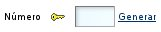
Por defecto el vínculo de la acción aparece solo cuando la propiedad es editable, ahora bien si la propiedad es de solo-lectura o calculada entonces está siempre disponible. Podemos usar el atributo siempre-activa (nuevo v2.0.3) a true para que el vínculo esté siempre presente, incluso si la propiedad no es editable. Como sigue:
<accion accion="Albaranes.generarNumero" siempre-activa="true"/>
El atributo siempre-activa es opcional y su valor por defecto es false.El código de la acción anterior es:
package org.openxava.test.acciones; import org.openxava.actions.*; /** * @author Javier Paniza */ public class GenerarNumeroAlbaran extends ViewBaseAction { public void execute() throws Exception { getView().setValue("numero", new Integer(77)); } }Una implementación simple pero ilustrativa. Se puede usar cualquier acción definida en controladores.xml y su funcionamiento es el normal para una acción OpenXava. En el capítulo sobre controladores veremos más detalles sobre las acciones.
Opcionalmente podemos hacer nuestra acción una IPropertyAction (nuevo v2.0.2) (esto está disponible solo para acciones usadas en <vista-propiedad/>), the esta forma la vista contenedora y el nombre de la propiedad son inyectados en la acción por OpenXava. La clase de la acción anterior se podría reescribir así:
package org.openxava.test.acciones; import org.openxava.actions.*; import org.openxava.view.*; /** * @author Javier Paniza */ public class GenerarNumeroAlbaran extends BaseAction implements IPropertyAction { // 1 private View view; private String property; public void execute() throws Exception { view.setValue(property, new Integer(77)); // 2 } public void setProperty(String property) { // 3 this.property = property; } public void setView(View view) { // 4 this.view = view; } }Esta acción implementa IPropertyAction (1), esto requiere que la clase tenga los métodos setProperty() (3) y setView() (4), estos valores serán inyectados en la acción antes de llamar al método execute(), donde pueden ser usados (2). En este caso no necesitas inyectar el objeto xava_view al definir la acción en controladores.xml. La vista inyectada por setView() (4) es la vista más interna que contiene la propiedad, por ejemplo, si la propiedad está dentro de un agregado es la vista de ese agregado, no la vista principal del módulo. De esta manera podemos escribir acciones más reutilizables.
Escoger un editor (propiedad, nuevo en v2.1.3)
Un editor visualiza la propiedad al usuario y le permite editar su valor. OpenXava usa por defecto el editor asociado al estereotipo o tipo de la propiedad, pero podemos especificar un editor concreto para visualizar una propiedad en una vista.Por ejemplo, OpenXava usa un combo para editar las propiedades de tipo valores-posibles, pero si queremos visualizar una propiedad de este tipo en alguna vista concreta usando un radio button podemos definir esa vista de esta forma:
<vista nombre="TipoConRadioButton"> <vista-propiedad propiedad="tipo" editor="ValidValuesRadioButton"/> <miembros>codigo; tipo; nombre; direccion</miembros> </vista>En este caso para visualizar/editar se usará el editor ValidValuesRadioButton, en lugar de del editor por defecto. ValidValueRadioButton está definido en OpenXava/xava/default-editors.xml como sigue:
<editor name="ValidValuesRadioButton" url="radioButtonEditor.jsp"/>
Este editor está incluido con OpenXava, pero nosotros podemos crear nuestro propios editores con nuestro propios JSPs y declararlos en el archivo xava/editores.xml de nuestro proyecto.Esta característica es para cambiar el editor solo en una vista. Si lo que se pretende es cambiar el editor para un estereotipo, tipo o una propiedad de un modelo a nivel de aplicación entonces lo mejor es configurarlo usando el archivo xava/editors.xml.
Estilo de etiqueta (nuevo en v5.8)
Si definimos la vista de una propiedad así:<vista> <vista-propiedad propiedad="numero" estilo-etiqueta="italic-label red-label"/> </vista>Obtendremos:

El estilo lo podemos definir en nuestro fichero web/xava/style/custom.css, en nuestro ejemplo hemos añadido:
.red-label{
color: red;
font-weight:bold;
}
Vista referencia
Con <vista-referencia/> modificamos la forma en que se visualiza una referencia.Su sintaxis es:
<vista-referencia referencia="referencia" <!-- 1 --> vista="vista" <!-- 2 --> solo-lectura="true|false" <!-- 3 --> marco="true|false" <!-- 4 --> crear="true|false" <!-- 5 --> modificar="true|false" <!-- 6 nuevo en v2.0.4 --> buscar="true|false" <!-- 7 --> como-agregado="true|false" <!-- 8 nuevo en v2.0.3 --> editor="nombreEditor" <!-- 9 nuevo en v3.1.3 --> plegada="true|false" <!-- 10 nuevo en v2.0.4 --> > <condicion-lista-busqueda ... /> <!-- 11 nuevo en v4m4 --> <busqueda-al-cambiar ... /> <!-- 12 nuevo en v2.2.5 --> <accion-buscar ... /> <!-- 13 --> <lista-descriptiones ... /> <!-- 14 --> <accion ... /> ... <!-- 15 nuevo en v2.0.1 --> </vista-referencia>
- referencia (obligado): Nombre de la referencia del modelo de la que se quiere personalizar la visualización.
- vista (opcional): Si omitimos este atributo usa la vista por defecto del objeto referenciado para visualizarlo, con este atributo podemos indicar que use otra vista.
- solo-lectura (opcional): Si la ponemos a true esta referencia no será nunca editable por el usuario en esta vista. Una alternativa a esto es hacer la propiedad editable/no editable programáticamente usando org.openxava.view.View.
- marco (opcional): Si el dibujador de la interfaz gráfica usa un marco para envolver todos los datos de la referencia con este atributo se puede indicar que dibuje o no ese marco, por defecto sí que sacará el marco.
- crear (opcional): Indica si el usuario ha de tener opción para crear o no un nuevo objeto del tipo referenciado. Por defecto vale true.
- modificar (opcional): (Nuevo en v2.0.4) Indica si el usuario ha de tener opción para modificar o no el objeto actualmente referenciado. Por defecto vale true.
- buscar (opcional): Indica si el usuario va a tener un vínculo para poder realizar búsquedas con una lista, filtros, etc. Por defecto vale true.
- como-agregado (opcional): (Nuevo en v2.0.3) Por defecto false. Por defecto en el caso de una referencia a un agregado el usuario puede crear y editar sus datos, mientras que en el caso de una referencia a una entidad el usuario escoge una entidad existente. Si ponemos como-agregado a true entonce la interfaz de usuario para referencias a entidad se comporta como en el caso de los agregados, permitiendo al usuario crear un nuevo objeto y editar sus datos directamente. No tiene efecto en el caso de una referencia a agregado. ¡Ojo! Si borramos una entidad sus entidades referenciadas no se borran, incluso si estamos usando como-agregado="true".
- editor (opcional): (Nuevo en v3.1.3) Nombre del editor a usar para visualizar la referencia en esta vista. El editor tiene que estar declarado en OpenXava/xava/default-editors.xml o xava/editores.xml de nuestro proyecto.
- plegada (opcional): (Nuevo en v5.0) La referencia se mostrará contraída. Visualmente significa que el marco que rodea a la vista de la referencia se iniciará cerrado. Más tarde el usuario podrá establecer sus preferencias haciendo clic en el icono de expansión. Por defecto vale false.
- condicion-lista-busqueda (una, opcional): (Nuevo en v4m4) Condición a usar para la lista de elementos seleccionable susceptibles de ser asignados a la referencia.
- busqueda-al-cambiar (una, opcional): (Nuevo en v2.2.5) Nos permite especificar nuestra propia acción de búsqueda cuando el usuario teclea una clave nueva.
- accion-buscar (una, opcional): Nos permite especificar nuestra propia acción de búsqueda cuando el usuario pulsa en el vínculo para buscar.
- lista-descripciones: Permite visualizar los datos como una lista descripciones, típicamente un combo. Práctico cuando hay pocos elementos del objeto referenciado.
- accion (varias, opcional): (Nuevo en v2.0.1) Acciones (mostradas como vínculos, botones o imágenes al usuario) asociadas (visualmente) a esta referencia y que el usuario final puede ejecutar. Funciona como ene el caso de vista-propiedad.
<entidad> ... <referencia nombre="familia" modelo="Familia" requerido="true"/> ... </entidad>La interfaz gráfica tendrá el siguiente aspecto (vínculo para modificar nuevo en v2.0.4):

Escoger vista
La modificación más sencilla sería especificar que vista del objeto referenciado queremos usar:<vista-referencia referencia="factura" vista="Simple"/>
Para esto en el componente Factura tenemos que tener una vista llamada simple:<componente nombre="Factura"> ... <vista nombre="Simple"> <miembros> año, numero, fecha, descuentoAño; </miembros> </vista> ... </componente>Y así en lugar de usar la vista de la Factura por defecto, que supuestamente sacará toda la información, visualizará ésta:

Personalizar el enmarcado
Si combinamos marco="false" con un grupo podemos agrupar visualmente una propiedad que no forma parte de la referencia, por ejemplo:<vista-referencia referencia="comercial" marco="false"/> <miembros> ... <grupo nombre="comercial"> comercial; relacionConComercial; </grupo> ... </miembros>Así obtendríamos:
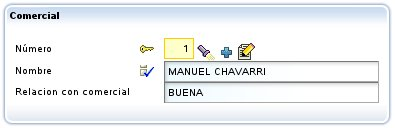
Acción de búsqueda propia
El usuario puede buscar un nuevo valor para la referencia simplemente tecleando el código y al salir del editor recupera el valor correspondiente; por ejemplo, si el usuario teclea "1" en el campo del código de comercial, el nombre (y demás datos) del comercial "1" serán automáticamente rellenados. También podemos pulsar la linternita, en ese caso vamos a una lista en donde podemos filtrar, ordenar, etc, y marcar el objeto deseado.Para definir nuestra propia rutina de búsqueda podemos usar <accion-buscar/>, como sigue:
<vista-referencia referencia="comercial"> <accion-buscar accion="MiReferencia.buscar"/> </vista-referencia>Ahora al pulsar la linternita ejecuta nuestra acción, la cual tenemos que tener definida en controladores.xml:
<controlador nombre="MiReferencia"> <accion nombre="buscar" oculta="true" clase="org.openxava.test.acciones.MiAccionBuscar" imagen="images/search.gif"> <usa-objeto nombre="xava_view"/> <!-- No obligatorio desde v4m2 --> <usa-objeto nombre="xava_referenceSubview"/> <!-- No obligatorio desde v4m2 --> <usa-objeto nombre="xava_tab"/> <!-- No obligatorio desde v4m2 --> <usa-objeto nombre="xava_currentReferenceLabel"/> <!-- No obligatorio desde v4m2 --> </accion> ... </controlador>Lo que hagamos en MiAccionBuscar ya es cosa nuestra. Podemos, por ejemplo, refinar la acción por defecto de búsqueda para filtrar la lista usada para buscar, como sigue:
package org.openxava.test.acciones; import org.openxava.actions.*; /** * @author Javier Paniza */ public class MiAccionBuscar extends ReferenceSearchAction { public void execute() throws Exception { super.execute(); // El comportamiento por defecto para buscar getTab().setBaseCondition("${codigo} < 3"); // Añadir un filtro a la lista } }Veremos más acerca de las acciones en el capítulo sobre los controladores.
Acción de creación propia
Si no hemos puesto crear="false" el usuario tendrá un vínculo para poder crear un nuevo objeto. Por defecto muestra la vista por defecto del componente referenciado y permite introducir valores y pulsar un botón para crearlo. Si queremos podemos definir nuestras propias acciones (entre ellas la de crear) en el formulario a donde se va para crear uno nuevo, para esto hemos de tener un controlador llamado como el componente con el sufijo Creation. Si OpenXava ve que existe un controlador así lo usa en vez del de por defecto para permitir crear un nuevo objeto desde una referencia. Por ejemplo, podemos poner en nuestro controladores.xml:<!-- Puesto que su nombre es AlmacenCreation (nombre modelo + Creation) es usado por defecto para crear desde referencias, en vez de NewCreation. La accion 'new' es ejecutada automáticamente. --> <controlador nombre="AlmacenCreation"> <hereda-de controlador="NewCreation"/> <accion nombre="new" oculta="true" clase="org.openxava.test.actions.CrearNuevoAlmacenDesdeReferencia"> <usa-objeto nombre="xava_view"/> <!-- No obligatorio desde v4m2 --> </accion> </controlador>En este caso cuando en una referencia a Almacen pulsemos el vínculo 'crear' irá a la vista por defecto de Almacen y mostrará las acciones de AlmacenCreation.
Sí tenemos una acción new, ésta se ejecuta automáticamente antes de nada, la podemos usar para iniciar la vista si lo necesitamos.
Acción de modificación propia (nuevo en v2.0.4)
Si no hemos puesto modificar="false" el usuario tendrá un vínculo para poder actualizar el objeto actualmente referenciado. Por defecto muestra la vista por defecto del componente referenciado y permite modificar valores y pulsar un botón para actualizarlo. Si queremos podemos definir nuestras propias acciones (entre ellas la de actualizar) en el formulario a donde se va para modificar, para esto hemos de tener un controlador llamado como el componente con el sufijo Modification. Si OpenXava ve que existe un controlador así lo usa en vez del de por defecto para permitir modificar el objeto referenciado desde una referencia. Por ejemplo, podemos poner en nuestro controladores.xml:<!-- Dado que su nombre es AlmacenModification (nombre modelo + Modification) es usado por defecto para modificar desde referencias, en lugar de Modification. La acción 'search' se ejecuta automáticamente. --> <controlador nombre="AlmacenModification"> <hereda-de controlador="Modification"/> <accion nombre="search" oculta="true" clase="org.openxava.test.actions.ModificarAlmacenDesdeReferencia"> <usa-objeto nombre="xava_view"/> <!-- No obligatorio desde v4m2 --> </accion> </controlador>En este caso cuando en una referencia a Almacen pulsemos el vínculo 'modificar' irá a la vista por defecto de Almacen y mostrará las acciones de AlmacenModification.
Sí tenemos una acción search, ésta se ejecuta automáticamente antes de nada, la podemos usar para iniciar la vista con los datos del objeto actualmente referenciado.
Lista descripciones (combos)
Con <lista-descripciones/> podemos instruir a OpenXava para que visualice la referencia como una lista de descripciones (actualmente como un combo). Esto puede ser práctico cuando hay pocos valores y haya un nombre o descripción significativo. La sintaxis es:<lista-descripciones propiedad-descripcion="propiedad" <!-- 1 --> propiedades-descripcion="propiedades" <!-- 2 --> depende-de="depende" <!-- 3 --> condicion="condicion" <!-- 4 --> ordenado-por-clave="true|false" <!-- 5 --> orden="orden" <!-- 6 --> formato-etiqueta="NORMAL|PEQUENA|SIN_ETIQUETA" <!-- 7 --> mostrar-vista-referencia="true|false" <!-- 8 Nuevo en v5.5 --> para-tabs="tab1,tab2,..." <!-- 9 Nuevo en v4m4 --> no-para-tabs="tab1,tab2,..." <!-- 10 Nuevo en v4m4 --> estilo-etiqueta="estilo" <!-- 11 Nuevo en v5.8 --> />
- propiedad-descripcion (opcional): Indica que propiedad es la que tiene que aparecer en la lista, si no se especifica asume la propiedad description, descripcion, name o nombre. Si el objeto referencia no tiene ninguna propiedad llamada así entonces es obligado especificar aquí un nombre de propiedad.
- propiedad-descripciones (opcional): Como propiedad-descripcion (y además exclusiva con ella) pero permite poner una lista de propiedades separadas por comas. Al usuario le aparecen concatenadas.
- depende-de (opcional): Se usa junto con condicion para hacer que el contenido de la lista dependa del valor de otro miembro visualizado en la vista principal (si simplemente ponemos el nombre del miembro) o en la misma vista (si ponemos this. delante del nombre de miembro).
- condicion (opcional): Permite poner una condición (al estilo SQL) para filtrar los valores que aparecen en la lista de descripciones.
- ordenado-por-clave (opcional): Por defecto los datos salen ordenados por descripción, pero si ponemos está propiedad a true saldrán ordenados por clave.
- orden (opcional): Permite poner un orden (al estilo SQL) para los valores que aparecen en la lista de descripciones.
- formato-etiqueta (opcional): Forma en que se visualiza la etiqueta para esta referencia. Ver formato-etiqueta para propiedades.
- show-reference-view (opcional): (Nuevo en v5.5) Muestra un combo y una vista detalle de la referencia al mismo tiempo. La vista de la referencia es de solo lectura y sus valores cambian cuando el usuario cambia el combo. La vista usada es la que se especificada en <vista-referencia vista="">. El valor por defecto es false.
- para-tabs (opcional): (Nuevo en v4m4) Permite poner una lista de nombres de tabs entre comas. Si alguna de las propiedades de descriptionProperties se pone en alguno de esos tabs la propiedad se visualizará como una lista de descripciones para seleccionar en la parte del filtro.
- no-para-tabs (opcional): (Nuevo en v4m4) Permite poner una lista de nombres de tabs entre comas. Si alguna de las propiedades de descriptionProperties se pone en alguno de esos tabs la propiedad continuará visualizarándose como una propiedad plana en la parte del filtro.
- estilo-etiqueta (opcional): (Nuevo en v5.8) Estilo con el que se visualiza la etiqueta para esta propiedad. Por defecto están definidos los estilos 'bold-label', 'italic-label' y 'reverse-label'; cualquier otro estilo puede ser definido por el propio usuario (basta con incluirlo en custom.css).
<vista-referencia referencia="almacen"> <lista-descripciones/> </vista-referencia>Que haría que una referencia a Almacen se representara así:
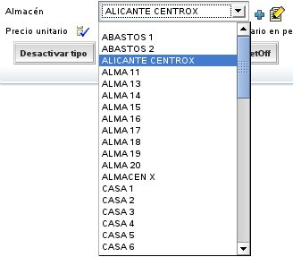
En un principio saca todos los almacenes, aunque en realidad usa la condicion-base y filtro especificados en el tab por defecto de Almacen. Veremos como funcionan los tabs en su capítulo.
Si queremos, por ejemplo, que se visualice un combo con las familias de productos y según la familia que se escoja se rellene el combo de las subfamilias, podemos hacer algo así:
<vista-referencia referencia="familia"> <lista-descripciones ordenado-por-clave="true"/> <!-- 1 --> </vista-referencia> <vista-referencia referencia="subfamilia" crear="false"> <!-- 2 --> <lista-descripciones propiedad-descripcion="descripcion" <!-- 3 --> depende-de="familia" <!-- 4 --> condicion="${familia.codigo} = ?" <!-- 5 --> orden="${descripcion} desc"/> <!-- 6 --> </vista-referencia>Se visualizarán 2 combos uno con todas las familias y otro vacío, y al seleccionar una familia el otro combo se rellenará con todas las subfamilias de esa familia.
En el caso de Familia (1) se visualiza la propiedad descripcion de Familia, ya que si no lo indicamos por defecto visualiza una propiedad llamada 'descripcion' o 'nombre'. En este caso los datos aparecen ordenados por clave y no por descripción. En el caso de Subfamilia indicamos que no muestre el vínculo para crear una nueva subfamilia (2) y que la propiedad a visualizar es descripcion (aunque esto lo podríamos haber omitido). Con depende-de (4) hacemos que este combo dependa de la referencia familia, cuando cambia familia en la interfaz gráfica, rellenará esta lista de descripciones aplicando la condición de condicion (5) y enviando como argumento (para rellenar el interrogante) el nuevo valor de familia. Y las entradas están ordenadas descendentemente por descripción (6).
En condicion y orden ponemos los nombres de las propiedades entre ${} y los argumentos como ?, los operadores de comparación son los de SQL.
Podemos especificar una lista de propiedades para que aparezca como descripción:
<vista-referencia referencia="comercialAlternativo" solo-lectura="true"> <lista-descripciones propiedades-descripcion="nivel.descripcion, nombre"/> </vista-referencia>En este caso en el combo se visualizará una concatenación de la descripción del nivel y el nombre. Además vemos como podemos usar propiedades calificadas (nivel.descripcion) también.
En el caso de poner una referencia lista-descripciones como solo-lectura se visualizará la descripción (en este caso nivel.descripcion + nombre) como si fuera una propiedad simple de texto y no como un combo.
Búsqueda de referencia al cambiar (new in v2.2.5)
El usuario puede buscar el valor de una referencia simplemente tecleando su clave. Por ejemplo, si hay una referencia a Subfamilia, el usuario puede teclear el código de subfamilia y automáticamente se cargará la información de la subfamilia en la vista. Esto se hace usando una acción "al cambiar" que hace la búsqueda. Podemos especificar nuestra propia acción para buscar cuando la clave cambia usando busqueda-al-cambiar, justo así:<vista-referencia referencia="subfamilia"> <busqueda-al-cambiar clase="org.openxava.test.acciones.BuscarAlCambiarSubfamilia"/> </vista-referencia>Esta acción se ejecuta para realizar la búsqueda, en vez de la acción por defecto, cuando el usuario cambia el código de subfamilia.
El código a ejecutar es:
package org.openxava.test.acciones; import org.openxava.actions.*; /** * * @author Javier Paniza */ public class BuscarAlCambiarSubfamilia extends OnChangeSearchAction { // 1 public void execute() throws Exception { if (getView().getValueInt("codigo") == 0) { getView().setValue("codigo", new Integer("1")); } super.execute(); } }La acción implementa IOnChangePropertyAction, mediante OnChangeSearchAction (1), aunque es una referencia. Recibe el cambio de la propiedad clave de la referencia; en este caso subfamilia.codigo.
Este caso es un ejemplo de refinamiento del comportamiento de la búsqueda al cambiar, porque extiende de OnChangeSearchAction, que es la acción por defecto para buscar, y llama a super.execute(). También es posible hacer una acción al cambiar convencional (extendiendo de OnChangePropertyBaseAction por ejemplo) anulando completamente la lógica de búsqueda.
Escoger un editor (referencia, nuevo in v3.1.3)
Un editor visualiza la referencia al usuario y le permite editar su valor. Por defecto, el editor que OpenXava usa para las referencias una vista de detalle dentro de un marco (la forma estándar) o un a combo (si usas @<lista-descripciones/>), pero puedes especificar tu propio editor para una referencia concreta en un vista usando <vista-referencia ... editor= />.Por ejemplo, si tienes una referencia a una entidad Color y la quieres visualizar en alguna vista particular de un componente usando una interfaz de usuario personalizada, como un grupo de botones radiales (radio buttons) con los colores disponibles. Puedes hacerlo de esta forma:
<vista-referencia referencia="color" editor="ColorBotonesRadiales"/>
En este caso se usará el editor ColorBotonesRadiales para visualizar y editar, en vez de la de por defecto. Tienes que definir el editor ColorRadioButton en el archivo xava/editores.xml de tu proyecto:<editor nombre="ColorBotonesRadiales" url="colorBotonesRadialesEditor.jsp"/>
Además has de escribir el código JSP para tu editor en colorBotonesRadialesEditor.jsp.Esta característica es para cambiar el editor para una referencia concreta en una vista concreta de un componente. Si lo que quieres es cambiar un editor para todas las referencias a cierto tipo de entidad a nivel de aplicación entonces es mejor configurarlo usando el archivo xava/editores.xml.
Veáse la sección Editores para referencias del capítulo 9 para más detalles.
Vista colección
Sirve para refinar la presentación de una colección. Aquí su sintaxis:<vista-coleccion coleccion="coleccion" <!-- 1 --> vista="vista" <!-- 2 --> solo-lectura="true|false" <!-- 3 --> solo-edicion="true|false" <!-- 4 --> crear-referencia="true|false" <!-- 5 --> modificar-referencia="true|false" <!-- 6 nuevo en v2.0.4 --> como-agregado="true|false" <!-- 7 nuevo en v2.0.2 --> editor="nombreEditor" <!-- 8 nuevo en v3.1.3 --> plegada="true|false" <!-- 9 nuevo en v5.0 --> > <propiedades-lista ... /> <!-- 10 --> <condicion-lista-busqueda ... /> <!-- 11 nuevo en v4m4 --> <estilo-fila ... /> <!-- 12 nuevo en v2.2.2 --> <accion-editar ... /> <!-- 13 --> <accion-ver ... /> <!-- 14 --> <accion-nuevo ... /> <!-- 15 nuevo en v2.0.2 --> <accion-anadir ... /> <!-- 16 nuevo en v5.7 --> <accion-grabar ... /> <!-- 17 nuevo en v2.0.2 --> <accion-ocultar-detalle ... /> <!-- 18 nuevo en v2.0.2 --> <accion-quitar ... /> <!-- 19 nuevo en v2.0.2 --> <accion-quitar-seleccionados ... /> <!-- 20 nuevo en v2.1 --> <accion-lista ... /> ... <!-- 21 --> <accion-fila ... /> ... <!-- 22 nuevo en v4.6 --> <accion-detalle ... /> ... <!-- 23 --> <accion-al-seleccionar-elemento ... /> <!-- 24 nuevo en v3.1.2 --> </vista-coleccion>
- coleccion (obligado): Indica la colección de la que se quiere personalizar la presentación.
- vista (opcional): La vista del objeto referenciado que se ha de usar para representar el detalle. Por defecto usa la vista por defecto.
- solo-lectura (opcional): Por defecto false, si la ponemos a true solo podremos visualizar los elementos de la colección, no podremos ni añadir, ni borrar, ni modificar los elementos.
- solo-edicion (opcional): Por defecto false, si la ponemos a true podemos modificar los elementos existentes, pero no podemos añadir nuevos ni eliminar.
- crear-referencia (opcional): Por defecto true, si la ponemos a false el usuario final no tendrá el vínculo que le permite crear objetos del tipo del objeto referenciado. Esto solo aplica en el caso de colecciones de referencias a entidad.
- modificar-referencia (opcional): (Nuevo en v2.0.4) Por defecto true, si la ponemos a false el usuario final no tendrá el vínculo que le permite modificar objetos del tipo del objeto referenciado. Esto solo aplica en el caso de colecciones de referencias a entidad.
- como-agregado (opcional): (Nuevo en v2.0.2) Por defecto false. Por defecto las colecciones de agregados permiten al usuario crear y añadir elementos, mientras que las colecciones de entidades permiten solo escoger entidades existentes para añadir (o quitar) de la colección. Si ponemos como-agregado a true entonces la colección de entidades se comportan como una colección de agregados, permitiendo al usuario añadir objetos y editarlos directamente. No tiene efecto en el caso de una colección de agregados.
- editor (opcional): (Nuevo en v3.1.3) Nombre del editor a usar para visualizar la colección en esta vista. El editor tiene que estar declarado en OpenXava/xava/default-editors.xml o xava/editores.xml de nuestro proyecto.
- plegada (opcional): (Nuevo en v5.0) La collección se mostrará contraída. Visualmente significa que el marco que rodea a la vista de la collección se iniciará cerrado. Más tarde el usuario podrá establecer sus preferencias haciendo clic en el icono de expansión. El valor por defecto es false.
- propiedades-lista (una, opcional): Indica las propiedades que han de salir en la lista al visualizar la colección. Podemos calificar las propiedades. Por defecto saca todas las propiedades persistentes del objeto referenciado (sin incluir referencias ni calculadas). El sufijo + (nuevo en v4.1) se puede añadir a una propiedad para mostrar la suma de la columna, como en los tabs. Antes de v5.9 el sumatorio de columnas no funcionaba en las colecciones calculadas. El sumatorio (+) no está disponible para propiedades calculadas en colecciones no calculadas.
- condicion-lista-busqueda (una, opcional): (Nuevo en v4m4) Condición a usar para la lista de elementos seleccionable susceptibles de ser añadidos a la colección. No aplica a colección embebidas.
- estilo-lista (varios, opcional): (Nuevo en v2.2.2) Para dar un estilo especial a algunas filas. Se comporta igual que en el caso del Tab. Para más detalles ver la sección sobre resaltar filas. No funciona para colecciones calculadas.
- accion-editar (una, opcional): Permite sobreescribir la acción que inicia la edición de un elemento de la colección. Esta es la acción mostrada en cada fila cuando la colección es editable.
- accion-ver (una, opcional): Permite sobreescribir la acción para visualizar un elemento de la colección. Esta es la acción mostrada en cada fila cuando la colección es de solo lectura.
- accion-nuevo (una, opcional): (Nuevo en v2.0.2) Permite definir nuestra propia acción para empezar a crear un nuevo elemento y añadirlo en la colección. Ésta es la acción que se ejecuta al pulsar en el vínculo 'Nuevo'. Antes de v5.7 esta anotación también se usaba para sobrescribir la acción 'Añadir', porque entonces no coexistían.
- accion-anadir (una, opcional): (Nuevo en v5.7) Permite definir nuestra propia acción para empezar a añadir un nuevo elemento a la colección escogiendo uno preexistente. Ésta es la acción que se ejecuta al pulsar en el vínculo 'Añadir'.
- accion-grabar (una, opcional): (Nuevo en v2.0.2) Permite definir nuestra propia acción para grabar el elemento de la colección. Ésta es la acción que se ejecuta al pulsar el vínculo 'Grabar detalle'.
- accion-ocultar-detalle (una, opcional): (Nuevo en v2.0.2) Permite definir nuestra propia acción para ocultar la vista de detalle. Ésta es la acción que se ejecuta al pulsar el vínculo 'Cerrar'.
- accion-quitar (una, opcional): (Nuevo en v2.0.2) Permite definir nuestra propia acción para borrar un elemento de la colección. Ésta es la acción que se ejecuta al pulsar en el vínculo 'Quitar detalle'.
- accion-quitar-seleccionados (una, opcional): (Nuevo en v2.1) Permite definir nuestra propia acción para quitar los elementos seleccionados de la colección. Ésta es la acción que se ejecuta al seleccionar algunas filas y pulsar en el vínculo 'Quitar seleccionados'.
- accion-lista (varias, opcional): Para poder añadir acciones en el modo lista; normalmente acciones cuyo alcance es la colección entera.
- accion-fila (varias, opcional): (Nuevo en v4.6) Para poder añadir acciones en el modo lista asociados a cada fila.
- accion-detalle (varias, opcional): Para poder añadir acciones en detalle, normalmente acciones cuyo alcance es el detalle que se está editando.
- accion-al-seleccionar-elemento (una, opcional): (Nuevo en v3.1.2) Para poder definir una acción a ser ejecutada cuando un elemento de la colección se selecciona o se deselecciona.
<vista-coleccion coleccion="clientes" vista="Simple"> <propiedades-lista> codigo, nombre, observaciones, relacionConComercial, comercial.nivel.descripcion </propiedades-lista> </vista-coleccion>De esta forma la colección se visualiza así:

Podemos ver como en la lista de propiedades podemos poner propiedades calificadas (como comercial.nivel.descripcion).
Al pulsar 'Editar' se visualizará el detalle usando la vista Simple de Cliente; para eso
hemos de tener una vista llamada Simple en el componente Cliente (el modelo de los elementos de la colección).
Este vista se usa también cuando el usuario pulsa en 'Añadir' en una colección de agregados, pero en el caso de una colección de entidades OpenXava no muestra esta vista, en su lugar muestra una lista de entidades a añadir (nuevo en v2.2).
Si la vista Simple de Cliente es así:
<vista nombre="Simple" miembros="codigo; tipo; nombre; direccion"/>
Al pulsar detalle aparecerá:
Acción de editar/ver detalle propia
Podemos refinar fácilmente el comportamiento cuando se pulse el vínculo 'Editar':<vista-coleccion coleccion="lineas"> <accion-editar accion="Facturas.editarLinea"/> </vista-coleccion>Hemos de definir Facturas.editarLinea en controladores.xml:
<controlador nombre="Facturas"> ... <accion nombre="editarLinea" oculta="true" clase="org.openxava.test.acciones.EditarLineaFactura"> <usa-objeto nombre="xava_view"/> <!-- No obligatorio desde v4m2 --> </accion> ... </controlador>Y nuestra acción puede ser así:
package org.openxava.test.acciones; import java.text.*; import org.openxava.actions.*; /** * @author Javier Paniza */ public class EditarLineaFactura extends EditElementInCollectionAction { // 1 public void execute() throws Exception { super.execute(); DateFormat df = new SimpleDateFormat("dd/MM/yyyy"); getCollectionElementView().setValue( // 2 "observaciones", "Editado el " + df.format(new java.util.Date())); } }En este caso queremos solamente refinar y por eso nuestra acción desciende de (1) EditElementInCollectionAction. Nos limitamos a poner un valor por defecto en la propiedad observaciones. Es de notar que para acceder a la vista que visualiza el detalle podemos usar el método getCollectionElementView() (2).
También es posible eliminar la acción para editar de la interfaz de usuario (nuevo en v2.2.1), de esta manera:
<vista-coleccion coleccion="lineas"> <accion-editar accion=""/> </vista-coleccion>Sólo necesitamos poner una cadena vacía como valor para la acción. Aunque en la mayoría de los casos es suficiente declarar la colección como de solo-lectura.
La técnica para refinar una acción 'ver' (la acción para cada fila cuando la colección es de solo lectura) es la misma pero usando <accion-ver/> en vez de <accion-editar/>.
Acciones de lista y fila propias
Podemos usar <accion-lista /> para definir acciones que apliquen a toda la colección y <accion-fila /> (nuevas en v4.6) para definir acciones para cada fila. <accion-lista /> y <accion-fila /> son muy parecidas, de hecho se pueden programar de la misma manera, la diferencia está en que las acciones <accion-lista /> se muestran en la barra de botones de la colección, mientras que las acciones <accion-fila /> aparecen en cada fila. Las acciones <accion-lista /> también pueden aparecer en cada fila si están definidas con en-cada-fila="true" en controladores.xml.Un ejemplo:
<vista-coleccion coleccion="compañeros" vista="Simple"> <accion-lista accion="Transportistas.traducirNombre"/> </vista-coleccion>Ahora aparece un nuevo vínculo al usuario:
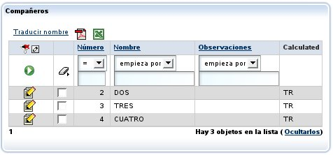
Vemos además como ahora hay una casilla de chequeo en cada línea (desde v2.1.4 la casilla de chequeo está siempre presente en todas las colecciones).
Falta definir la acción en controladores.xml:
<controlador nombre="Transportistas"> <accion nombre="traducirNombre" clase="org.openxava.test.acciones.TraducirNombreTransportista"> </accion> </controlador>Y el código de nuestra acción:
package org.openxava.test.acciones; import java.util.*; import org.openxava.actions.*; import org.openxava.test.modelo.*; /** * @author Javier Paniza */ public class TraducirNombreTransportista extends CollectionBaseAction { // 1 public void execute() throws Exception { Iterator it = getSelectedObjects().iterator(); // 2 while (it.hasNext()) { ITransportista transportista = (ITransportista) it.next(); transportista.traducir(); } } }La acción desciende de CollectionBaseAction (1), de esta forma tenemos a nuestra disposición métodos como getSelectedObjects() (2) que ofrece una colección de los objetos seleccionados por el usuario. Hay disponible otros métodos como getObjects() (todos los objetos de la colección), getMapValues() (los valores de la colección en formato de mapa) y getMapsSelectedValues() (los valores seleccionados de la colección en formato de mapa). En el caso de <accion-fila />, getSelectedObjects() y getMapsSelectedValues() devuelven un único elemento, el correspondiente a la fila de la acción, incluso si la fila no está seleccionada.
Como en el caso de la acciones de detalle (ver la siguiente sección) puedes usar getCollectionElementView().
También es posible usar acciones para el modo lista como acciones de lista para una colección (nuevo en v2.1.4).
Acciones de lista y fila por defecto (nuevo en v2.1.4)
Si queremos añadir alguna acciones de lista a todas las colecciones de nuestra aplicación hemos de crear un controlador llamado DefaultListActionsForCollections en nuestro propio xava/controladores.xml como sigue:<controlador nombre="DefaultListActionsForCollections"> <hereda-de controlador="Print"/> <accion nombre="exportarComoXML" clase="org.openxava.test.acciones.ExportarComoXML"> </accion> </controlador>De esta forma todas las colecciones tendrán las acciones del controlador Print (para exportar a Excel y generar informes PDF) y nuestra propia acción ExportarComoXML. Esto tiene el mismo efecto que <accion-lista /> pero aplica a todas las colecciones a la vez.
Si queremos definir lista de fila por defecto (<accion-fila />) podemos definir el controlador DefaultRowActionsForCollections (nuevo en v4.6).
Esta característica no aplica a las colecciones calculadas (nuevo en v2.2.1).
Acciones de detalle propias
También podemos añadir nuestras propias acciones a la vista de detalle usada para editar cada elemento. Estas sería acciones que aplican a un solo elemento de la colección. Por ejemplo:<vista-coleccion coleccion="lineas"> <accion-detalle accion="Facturas.verProducto"/> </vista-coleccion>Esto haría que el usuario tuviese a su disposición otro vínculo al editar el detalle:

Debemos definir la acción en controladores.xml:
<controlador nombre="Facturas"> ... <accion nombre="verProducto" oculta="true" clase="org.openxava.test.acciones.VerProductoDesdeLineaFactura"> <usa-objeto nombre="xava_view"/> <!-- No obligatorio desde v4m2 --> <usa-objeto nombre="xavatest_valoresFactura"/> </accion> ... </controlador>Y el código de nuestra acción:
package org.openxava.test.acciones; import java.util.*; import javax.ejb.*; import org.openxava.actions.*; /** * @author Javier Paniza */ public class VerProductoDesdeLineaFactura extends CollectionElementViewBaseAction // 1 implements INavigationAction { @Inject // A partir de v4m2 private Map valoresFactura; public void execute() throws Exception { try { setValoresFactura(getView().getValues()); Object codigo = getCollectionElementView().getValue("producto.codigo"); // 2 Map clave = new HashMap(); clave.put("codigo", codigo); getView().setModelName("Producto"); // 3 getView().setValues(clave); getView().findObject(); getView().setKeyEditable(false); getView().setEditable(false); } catch (ObjectNotFoundException ex) { getView().clear(); addError("object_not_found"); } catch (Exception ex) { ex.printStackTrace(); addError("system_error"); } } public String[] getNextControllers() { return new String [] { "ProductoDesdeFactura" }; } public String getCustomView() { return SAME_VIEW; } public Map getValoresFactura() { return valoresFactura; } public void setValoresFactura(Map map) { valoresFactura = map; } }Vemos como desciende de CollectionElementViewBaseAction (1) y así tiene disponible la vista que visualiza el elemento de la colección mediante getCollectionElementView() (2). También podemos acceder a la vista principal mediante getView() (3). En el capítulo sobre controladores se ven más detalles acerca de como escribir acciones.
Además, usando la vista devuelta por getCollectionElementView() podemos añadir y borrar programaticamente acciones de detalle y de lista (nuevo en v2.0.2) con addDetailAction(), removeDetailAction(), addListAction() y removeListAction(), ver API doc para org.openxava.view.View.
Refinar comportamiento por defecto para la vista de colección (nuevo en v2.0.2)
Usando <accion-nuevo/>, <accion-anadir/> (nuevo en v5.7), <accion-grabar/>, <accion-ocultar-detalle/>, <accion-quitar-seleccionados/> y <accion-quitar/> podemos refinar el comportamiento por defecto para una vista de colección. Por ejemplo, si queremos refinar el comportamiento de la acción de grabar un detalle podemos definir nuestra vista de esta forma:<vista-coleccion coleccion="detalles"> <accion-grabar accion="DetallesAlbaran.grabar"/> </vista-coleccion>Debemos tener la acción DetallesAlbaran.grabar en controladores.xml:
<controlador nombre="DetallesAlbaran"> <accion nombre="grabar" clase="org.openxava.test.acciones.GrabarDetalleAlbaran"> <usa-objeto nombre="xava_view"/> <!-- No obligatorio desde v4m2 --> </accion> </controlador>Y definir la clase acción para grabar:
package org.openxava.test.acciones; import org.openxava.actions.*; /** * * @author Javier Paniza */ public class GrabarDetalleAlbaran extends SaveElementInCollectionAction { // 1 public void execute() throws Exception { super.execute(); // Aquí nuestro código // 2 } }El caso más común es extender el comportamiento por defecto, para eso hemos de extender la clase original para grabar un detalle de una colección (1), esto es la acción SaveElementInCollection, entonces llamamos a super desde el método execute() (2), y después escribimos nuestro propio propio código.
Nuevo en v2.2.1: También es posible eliminar cualquiera de estas acciones de la interfaz gráfica, por ejemplo, podemos defina una
<vista-coleccion/> de esta manera:
<vista-coleccion coleccion="detalles"> <accion-quitar-seleccionados accion=""/> </vista-coleccion>En este caso la acción para quitar los elementos seleccionadas no aparecerá en la interfaz de usuario. Como se ve, sólo es necesario declarar una cadena vacía como nombre de la acción.
Acción cuando un elemento de la colección es seleccionado (nuevo en v3.1.2)
Podemos definir una acción que se ejecute cuando un elemento de una colección se seleccione o deseleccione. Esto se consigue usando <accion-al-seleccionar-elemento/> en <vista-coleccion/>. Por ejemplo, supongamos que tenemos una colección como esta: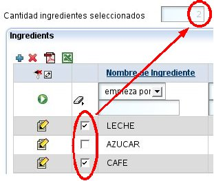
Y queremos que al seleccionar una fila el valor de el campo cantidadIngredientesSeleccionados se actualice en la interfaz de usuario. Vamos a ver como hacerlo.
Primero hemos de declarar nuestra colección en <vista-coleccion/>:
<vista-coleccion coleccion="ingredientes"> <accion-al-seleccionar-elemento accion="Formula.alSeleccionarIngrediente"/> </vista-coleccion>De esta manera tan sencilla (1) estamos diciendo que cuando el usuario haga click en la casilla de chequeo (checkbox) de la fila, la acción Formula.alSeleccionarIngrediente se ejecutará. Esta acción se declara en controladores.xml, de esta manera:
<controlador nombre="Formula"> ... <accion nombre="alSeleccionarIngredientes" oculta="true" clase="org.openxava.test.acciones.AlSeleccionarIngrediente"> <usa-objeto nombre="xava_view"/> <!-- No obligatorio desde v4m2 --> </accion> ... </controlador>Ahora, solo nos queda el código de la clase AlSeleccionarIngrediente:
public class AlSeleccionarIngrediente extends OnSelectElementBaseAction { // 1 public void execute() throws Exception { int size = getView().getValueInt("cantidadIngredientesSeleccionados"); size = isSelected() ? size + 1 : size - 1; // 2 getView().setValue("cantidadIngredientesSeleccionados", new Integer(size)); } }La forma más fácil de implementar la acción es extendiendo de OnSelectElementBaseAction, esto nos permite acceder a la propiedad selected (por medio de isSelected(), 2) que indica si el usuario ha seleccionado o deseleccionado la fila; y row (usando getRow()) que indica el número de fila del elemento de la colección afectado.
Escoger un editor (colecciones, nuevo in v3.1.3)
Un editor visualiza la colección al usuario y le permite editar su valor. Por defecto, el editor que OpenXava usa para las colecciones es una lista con los datos en formato tabular, que permite filtrar, ordenar, paginar, etc., pero puedes especificar tu propio editor para una colección concreta usando <vista-coleccion ... editor= />.Por ejemplo, si tienes una colección de entidades Cliente y la quieres visualizar en alguna vista de un componente particular usando una interfaz de usuario personalizada, como una lista simple de nombres. Puedes hacerlo de esta forma:
<vista-coleccion coleccion="clientes" editor="NombresClientes"/>
En este caso se usará el editor NombresClientes para visualizar y editar, en vez de la de por defecto. Tienes que definir el editor NombresClientes en el archivo xava/editores.xml de tu proyecto:<editor nombre="NombresClientes" url="nombresClientesEditor.jsp"/>
Además has de escribir el código JSP para tu editor en nombresClientesEditor.jsp.Esta característica es para cambiar el editor para una colección concreta en una vista concreta de un componente. Si lo que quieres es cambiar un editor para todas las colecciones a cierto tipo de componente a nivel de aplicación entonces es mejor configurarlo usando el archivo xava/editores.xml.
Veáse la sección Editores para colecciones del capítulo 9 para más detalles.
Propiedad de vista
Poniendo <propiedad/> dentro de una vista podemos usar una propiedad que no existe en el modelo, pero que sí nos interesa que se visualice al usuario. Podemos usarlas para proporcionar controles al usuario para manejar la interfaz gráfica.Un ejemplo:
<vista> <propiedad nombre="entregadoPor"> <valores-posibles> <valor-posible valor="empleado"/> <valor-posible valor="transportista"/> </valores-posibles> <calculador-valor-defecto clase="org.openxava.calculators.IntegerCalculator"> <poner propiedad="value" valor="0"/> </calculador-valor-defecto> </propiedad> <vista-propiedad propiedad="entregadoPor"> <al-cambiar clase="org.openxava.test.actiones.AlCambiarEntregadoPor"/> </vista-propiedad> ... </vista>Podemos observar como la sintaxis es exactamente igual que en el caso de definir una propiedad en la parte del modelo, podemos incluso hacer que sea un <valores-posibles/> y que tenga un <calculador-valor-defecto/>. Después de haber definido la propiedad podemos usarla en la vista como una propiedad más, asignandole una propiedad al-cambiar por ejemplo y por supuesto poniendola en <miembros/>.
Acciones de la vista (nuevo en v2.0.3)
Además de poder asociar acciones a una propiedad, referencia o colección, podemos tambien definir acciones arbitrarias en cualquier parte de nuestra vista. Para poder hacer esto se usa el elemento accion, de esta manera:<miembros> codigo; tipo; nombre, <accion accion="Clientes.cambiarEtiquetaDeNombre"/>; ... </miembros>El efecto visual sería:
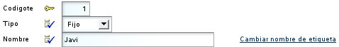
Podemos ver el vínculo 'Cambiar nombre de etiqueta' que ejecutará la acción Clientes.cambiarEtiquetaDeNombre al pulsarlo.
Si la vista contenedora de la acción no es editable, la acción no estará presente. Si queremos que la acción esté siempre activa, incluso si la vista no está editable, hemos de usar el atributo siempre-activa, como sigue:
<accion accion="Clientes.cambiarEtiquetaDeNombre" siempre-activa="true"/>
La forma normal de exponer las acciones al usuario es mediante los controladores (acciones en la barra), lo controladores son reutilizables entre vistas, pero puede que a veces necesitemos una acción específica a una vista, y queramos visualizarla dentro de la misma (no en la barra de botones), para estos casos el elemento accion puede ser útil.Podemos ver más acerca de las acciones en el capítulo sobre controladores.
Componente transitorio: Solo para crear vistas (nuevo en v2.1.3)
En OpenXava no se puede tener vistas que no estén asociadas a un modelo. Así que si queremos dibujar una interfaz gráfica arbitraria, lo que hemos de hacer es crear un componente, declararlo transitorio (nuevo en v2.1.3) y a partir de él definir una vista.Un componente transitorio no está asociada a ninguna tabla de la base de datos, normalmente se usa solo para visualizar interfaces de usuario no relacionadas con ninguna tabla de la base de datos.
Un ejemplo puede ser:
<?xml version="1.0" encoding="ISO-8859-1"?> <!DOCTYPE componente SYSTEM "dtds/componente.dtd"> <!-- Ejemplo de componente OpenXava transitorio (no persistente). Puede ser usado, por ejemplo, para visualizar un diálogo, o cualquier otra interfaz gráfica. --> <componente nombre="FiltrarPorSubfamilia"> <entidad> <referencia nombre="subfamilia" modelo="Subfamilia2" requerido="true"/> </entidad> <vista nombre="Familia1"> <vista-referencia referencia="subfamilia" crear="false"> <lista-descripciones condicion="${familia.codigo} = 1"/> </vista-referencia> </vista> <vista nombre="Familia2"> <vista-referencia referencia="subfamilia" crear="false"> <lista-descripciones condicion="${familia.codigo} = 2"/> </vista-referencia> </vista> <vista nombre="ConFormularioDeSubfamilia"> <vista-referencia referencia="subfamily" buscar="false"/> </vista> <transitorio/> <!-- 1 --> </componente>Para definir un componente como transitorio solo necesitamos poner <transitorio/> al final de la definición del componente (1), justo en la parte para los mapeos. No hemos de poner el mapeo ni declarar propiedades como clave.
De esta forma podemos hacer un diálogo que puede servir, por ejemplo, para lanzar un listado de familias o productos filtrado por subfamilias.
Podemos así tener un generador de cualquier tipo de interfaz gráficas sencillo y bastante flexible, aunque no queramos que la información visualizada sea persistente.